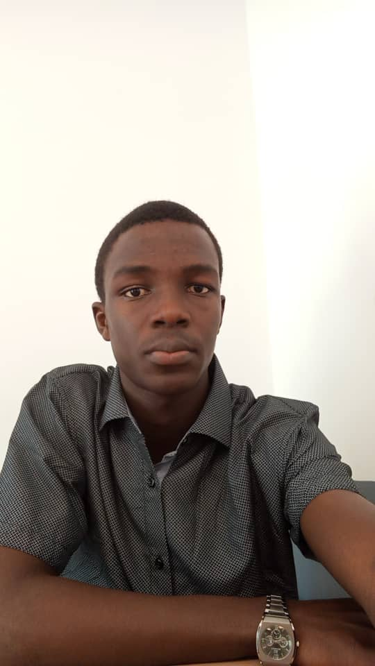

À Propos

Qui suis-je ?
Bonjour et bienvenue sur mon portfolio. Je suis Briand TETEH, étudiant en première année de BUT Informatique.
Agé de 18 ans, je suis originaire du Togo. Passionné par les mathématiques de base, j'ai fait un baccalauréat scientifique série C4 Mathématiques et Sciences Physiques au Lycée.
Rêvant de devenir un grand ingénieur, je me suis dirigé vers l'informatique. Actuellement en première année à l'IUT d'Aix Marseille site d'Arles, je prépare mon BUT et je développe les compétences nécessaires pour continuer plus tard le cycle d'ingénieur.
Mes Soft Skills
Travail en équipe
Aimant le travail d'équipe et l'apprentissage sur soi-même à travers les autres, j'ai déjà fait des travaux de groupes sur des projets au sein et en dehors de l'IUT.
Capacité de transmettre
Étant donné que tout au long de mon parcours scolaire j'aime aider mes camarades de classe, j'ai développé une compétence de transmettre facilement ce que je comprends bien et d'apprendre à un autre d'une manière très simple. Ce qui m'a aidé aussi à m'intéresser au travail d'équipe.
Rigueur et Ponctualité
Des qualités essentielles que je mets un point d'honneur à respecter dans tous mes engagements académiques et professionnels, afin de toujours fournir un travail de qualité dans les temps impartis.